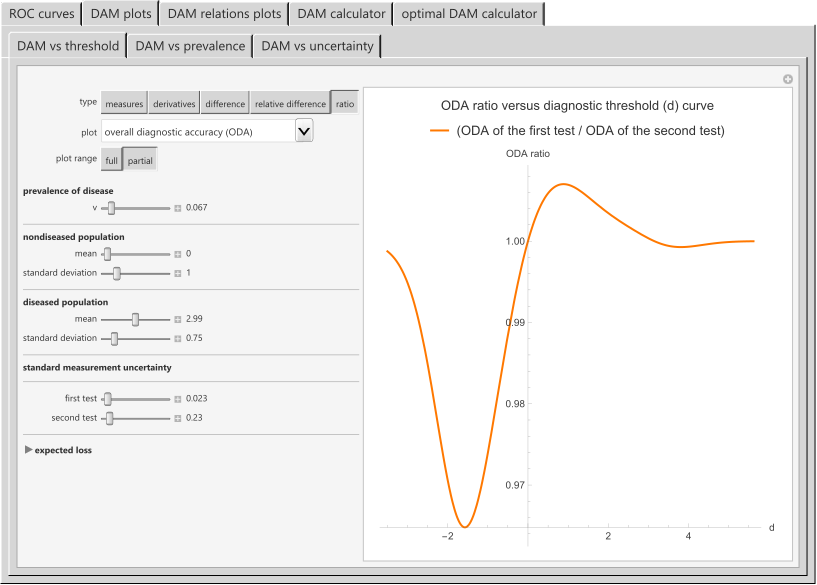

HCSL Software Repository
Relation
Chatzimichail T, Hatjimihail AT. Relation: A Software Tool for Exploring the Relation between Diagnostic Accuracy and Measurement Uncertainty. Ver. 1.0.4.4. Hellenic Complex Systems Laboratory; 2024.
Software Synopsis
This is an exploratory software tool for the relation between diagnostic accuracy measures and measurement uncertainty, as diagnostic accuracy is fundamental to clinical decision making, while measurement uncertainty is critical to quality and risk management in laboratory medicine. It provides five modules with six submodules for calculating, optimizing, plotting, and comparing various diagnostic accuracy measures and the corresponding risk of diagnostic or screening tests measuring a normally distributed measurand, applied at a single point in time in non-diseased and diseased populations. This is done for differing prevalence of the disease, mean and standard deviation of the measurand, diagnostic threshold, standard measurement uncertainty of the tests, and expected loss.
Comment
The Task Group: Analytical Performance Specifications based on Outcomes of the European Federation of Clinical Chemistry and Laboratory Medicine has proposed the program Relation as a tool 'that could help us inform our clinicians, guideline developers and the IVD industry about the impact of analytical performance on test accuracy and clinical decisions' (Horvath AR, Bell KJL, Ceriotti F, Jones GRD, Loh TP, Lord S, Sandberg S, et al. "Outcome-based Analytical Performance Specifications: Current Status and Future Challenges." Clinical Chemistry and Laboratory Medicine. 2024;62(8):1485-1493. DOI: 10.1515/cclm-2024-0125).
Snapshot

Source (Revised on 21/07/2024)
Software Requirements
Operating systems: Microsoft Windows, Linux, Apple macOS and iOS
Programming language: Wolfram Language
Source file format: Wolfram Notebook
Other software requirements: Wolfram Player (freely available) or Wolfram Mathematica
Recommended system: Intel Core i7 or equivalent CPU and 16GB+ of RAM
Project Status
Active
Terms of Use
The material made freely available by Hellenic Complex Systems Laboratory is subject to its Terms of Use.